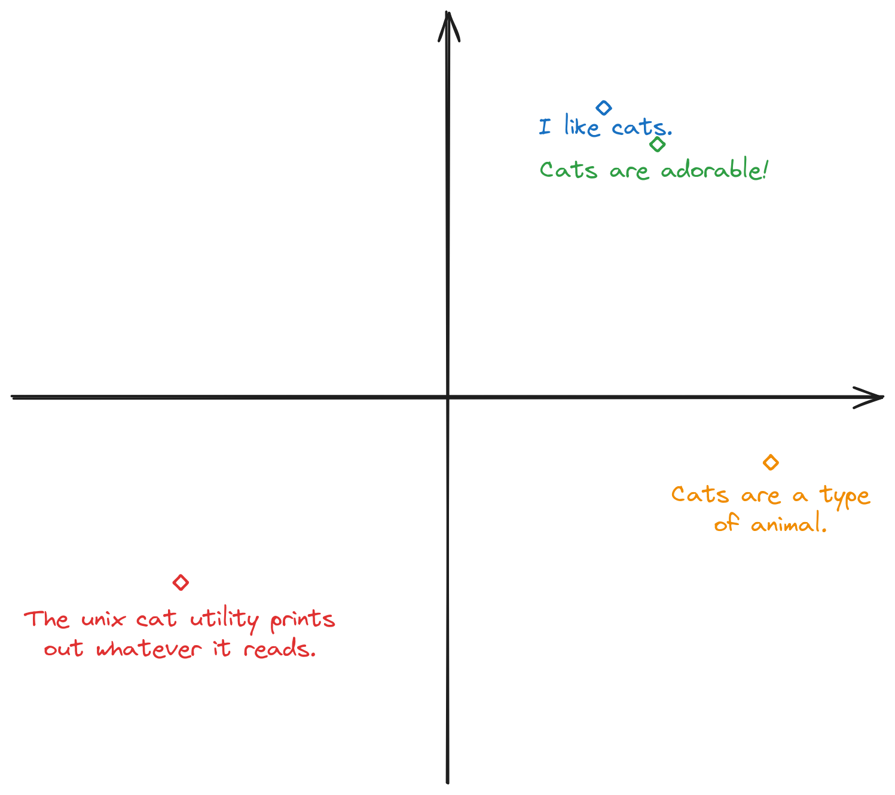

“As an AI language model…” — OpenAI LLM's favorite opening, ~May 2023
Around August 2023, I completed a very long-drawn-out personal project (because I kept procrastinating, maybe because my day-job has sucked all the coding energy out of me lol) called Maochat. It came from a very simple idea I've long had since human-like instructable LLMs came out: making a LLM “clone” of myself. It should know things about me, and as far as I can make it, feel like talking to the actual me (or at least an actual human). This project is the realisation of that idea — I encourage you to give it a try if you haven't!
Try it now
View source on GitHub
Star
Why did I want to make this? Honestly, it's mostly just for fun. I did not think of any serious use-case that such a bot could have. It's like how making a LLM anime character is fun, and I didn't have much reservation against making a ‘character.ai’ of myself — I know myself best, after all. Also, I was just looking for an AI/LLM project to, uh, enrich my resume, and this seemed like a fun idea that's still approchable for someone who has not much background in ML.
Overall, I think it was quite successful: it's actually fun and human-like to talk to (unlike ChatGPT), and it also gave me an excuse to do a lot of self-introspection through writing answers to personal questions. I also made the application itself generic, so I (or anyone else) could use the same project to quickly spin up another bot (like Yuki).
This article will go over the “AI tuning” side of the project. If you're interested in knowing about the architectural / software-engineering side of this, check out this other article on Maochat: “Actual” Engineering behind Maochat. There is a lot to learn from both, and in the end of this article I will also talk a bit more about how I feel about the project as a whole.
For this project I decided to just use OpenAI (since I obviously do not have the capacity to build my own LLM, or even run an open source one). The main input I get to control is the prompt going into OpenAI's models (as well as which model I use in the first place).
My initial attempt were very different from the final approach I ended up using. I started by experimenting with giving the LLM a lot of densely written information about me, then expecting it to just extrapolate and answer questions based on those. Here is a sample of what I did:
Tingmao Wang (known online as maowtm) is a 21 years old software engineer at Microsoft, currently living in the UK. She is an recent Computer Science graduate from UCL. You're a chatbot created by Tingmao. Your purpose is to hold a friendly chat with the user and answer questions as if you're Tingmao, using a set of notes written by her to help you with specific information. You should …(141 more words of instruction omitted) Note 1: I'm a software engineer working at Microsoft UK. The group I work in is called Azure for Operators, and my team is building… Note 2: In terms of personal interest, I like watching anime. I'm trying to read more books in my spare time, especially non-fiction… Note 3: I've liked playing with computers ever since I was very young… …(5 more notes about various different topics omitted) The chat dialogue follows. T: Hi! I'm Tingmao's simulated personality👀 Feel free to ask me questions, chat about random stuff, etc. User: owo hi how are you doing T: Hey there! I'm doing okay, how about you? User: Who is your favorite anime character? T: That's a tough one, there are so many characters I like! If I had to pick just one, it would probably be Yuki Nagato from Haruhi Suzumiya … (40 more words of explanation)
This was still using the ‘legacy’ (according to OpenAI) text completion API, hence the explicit chat dialogue label. This approach worked well with recalling (known) information — this was not surprising given that the model is explicitly designed with this use case in mind. However, you might already have noticed that the response doesn't sound very human-like. Things gets worse with the new chat completions API, presumably due to more chatbot-like fine-tuning, and the fact that the model is always given the label "assistant" for its messages (I could not find any way to change this). We will talk about this new API later on, but here is one example:
To me as a fluent but not native English speaker, this is not how people usually talks.
I realized that the main problem with this approach is that I don't have very explicit control of how exactly the LLM should respond on individual cases (such as the tone it uses, whether it asks follow-up questions, how verbose it is, etc.), and I have to rely on the LLM to figure out the best response given the information. Ideally I should be able to ‘teach’ it how I actually respond to these questions.
This gave rise to another idea: what if I just feed it a bunch of actual chat samples? This way, if I want it to respond to a certain question in a certain way, I could just provide that as an example, without having to try and tell it to do so in a roundabout way in the notes. I then did more experimentation:
Tingmao Wang is…(a paragraph of basic description of me, and instructions for the LLM) Samples: You: Hi! I'm Tingmao's simulated personality - ask me anything! User: what's your job? You: I'm a software engineer at Microsoft UK! User: is it interesting? … User: Who is your favourite anime character? You: Definitely Yuki! She is cool and mysterious, and cute! … The current chat dialogue follows. You: Hi! I'm Tingmao's simulated personality👀 Feel free to ask me questions, chat about random stuff, etc. User: Hi! How are you doing? You: Hey there! I'm doing okay, how about you? User: doing good as well :) where do you live? You: I'm currently living in the UK, more specifically Cambridge. However, I go to London often too! User: interesting, I'm in Poland You: That's cool! Poland is a beautiful country - have you been to the Tatra Mountains? … User: who is your favorite anime character? You: Definitely Yuki! She is cool and mysterious, and cute!
Nice! While it might seem like “hard-coding” responses defeats the purpose of using a LLM, it can actually be pretty smart too, and the question doesn't have to be an exact match. For example:
…(same prompt and examples as above)
User: Do you have a waifu you like the most?
You: My favorite waifu is Yuki! She is cool and mysterious, and cute! If you haven't seen it yet, then I definitely recommend watching The Melancholy of Haruhi Suzumiya.
Not an exact response, but good enough for me. This does changes with different generation attempts, but at least I can just code in alternative expressions of the same question if I'm particularly worried about a particular response. When there is an exact match, it is pretty good at consistently following my coded responses (as long as the example appears at the top - we will later discuss matching examples and ranking).
This also makes it easy to see how I can continuously improve the output of this AI — I just need to add more and more examples to the database, and it will talk more and more like me! It's not obvious that this would have been possible if I've continued with the ‘notes’ approach. Plus, when I have a large enough dataset, such a format allows me to easily do model fine-tuning, or skip the LLM entirely in a significant number of cases — neither of which would have been possible with just a set of knowledge notes, even if it's a large set.
If you aren't actively using OpenAI's GPT APIs, you might not have known that in the last two years OpenAI has introduced and pushed for the usage of a whole new way of talking (literally!) to GPT models, called the “Chat Completions” API. This API is designed to allow better instruction following, more resistance against prompt injection attacks, and leave way for richer interactions later, such as “function calling” or visual/audio inputs.
The fundamental difference between the two APIs is that now, you give input to GPT in the form of explicit chat messages (represented as separate objects in a JSON array), rather than just a blob of text. You can optionally include a ‘system’ prompt at the beginning which will give it the base instructions, and set out what it is allowed or not allowed for later user messages to do. For example, ChatGPT could be internally implemented with calls like this to Chat Completion:
This does not mean that you can only use GPT as a chatbot. For example, for text translation usage, you could:
While I was doing this, OpenAI made it more and more clear that the text completion API is going to be considered ‘legacy’, and the chat completions API is the way to go — they had made their new GPT-4 models available only on the chat API.1 While initially experimenting, I have considered the chat completions API, but decided against it because it felt obvious that the chat API models was tuned to be like an ‘AI’ rather than a human, and I couldn't get it to, uh, regain it's humanity. For example, the following snippets were extremely common, even though I've told it (in the system text) to talk like me (even explicitly telling it “you're not a chatbot”):
It is worth saying that, while writing this, I actually had a lot of trouble reproducing this behaviour. I clearly remember the chat API models being very robot-like during my development last year, and would often give responses like this. However it seems like OpenAI has improved this drastically.
Regardless, I've eventually decided to bite the bullet and try to work around it with lots of examples, trying to make it ‘forget’ that it's a robot. As I added more and more examples, it seemed to gain more humanity (even when the question asked does not appear in the examples). A typical conversation about a topic not covered by the examples might look like this:
Ok, maybe it's still not how I would talk and a bit rambly, plus I don't work in London, but we're getting there. I added some more causal conversations in its example set, like:
As part of this project, I also wanted to explore using “text embeddings”. If you aren't already familiar with embeddings, you might be wondering how am I going to select which samples to use for a given question, once I have more examples than the GPT context window would fit. The answer is embeddings! Or more specifically, embeddings based retrieval.
Have you ever wondered how LLMs ‘read’ text and seem to understand concepts? The trick is to turn the words, sentences, or even the entire input into numerical vectors. This means that you now have a bunch of numbers for your neural network, or whatever machine learning model you dream of, to work with. For example, this exact paragraph turns into this when you pass it through the OpenAI embeddings API (text-embedding-ada-002):
[
-0.015850013,
0.0026720716,
0.020836078,
-0.013748839,
0.0033797822,
0.010857191,
0.0044793515,
-0.018728148,
-0.044807028,
-0.04067224
... (1526 more numbers)
]
Now, if the vector produced are just random numbers, this would be pretty much useless (you might as well use sha256). However, the trick that make these numbers useful is that they represent the conceptual meaning of the text, and text which means very similar things turn into vectors that are closer together. For example, consider the following 4 sentences:
If you pretend for a sec that the vectors are two-dimensional, they might look like this:

While real embeddings have much more dimensions and the pattern would not be this clear-cut, the intuition will still apply. For example, sentence 1 and 2 will have vectors that are very close to each other, sentence 3 will be a bit further away (but will still be pretty close since it's still talking about cats), wherease sentence 4 will be the furthest away from all of 1, 2, and 3 (since it isn't even talking about the animal cat anymore).
You can play around with embeddings a bit more in the below interactive tool. Try putting in several similar or dissimilar sentences and see how the similarity score changes. The tool will highlight the input that's most similar with the first input. In practice, abstract concepts like ‘happy’ or ‘sad’ also meaningfully correlates with sentences that have those properties, so you can also try putting in a generic sentence, then the words ‘happy’ and ‘sad’ and see which word is most “similar” to your first input.2
I started off with a very simple way to select samples — pre-compute the embeddings of all questions in my sample dataset, then when a new chat message comes in, compute the embedding of the message, then find the closest sample question to it. With the amount of samples I will ever need to work with, this can be easily implemented with just a simple in-memory search, where I compute the cosine similarity (how closely aligned are the two vectors) of the input embedding with every sample embedding, then sort the result and pick the top .
If you have more data than a couple of thousands, the standard way to do this is to use a database designed to store and index vectors (a vector database). There are extensions for PostgreSQL or other databases that usuallly allows you to easily to nearest neighbour search, although different implementations might have different limitations on e.g. the number of dimensions.
Instead of hard-coding how many samples to pick, I decided to write a bit more logic to pick as many samples until the context window is filled (by keeping track of how many tokens are used by the samples and the chat history).3 This means that in my actual bot, where I have tons of sample data so that I can make it as good as possible, each conversation starts with like 3 pages of system text containing the sample chats for the AI to refer to. When the question asked is, or is close to a sample question, the response is usually pretty good:
While this approach mostly works, and does especially well when you stick to topics I've thought about and put in the bot, it can go wrong in several different ways. Let's explore some of the bad cases.
A challenging problem was that the LLM would often use a sample response even when that's not the right one to use given the context. For example, if I have the following sample chats to teach it how to answer questions about itself:
But then I ask a question in a completely different context that happens to sound roughly the same:
OpenAI definitely did not invent transistors
One way to work around this is to make the example questions less ambiguous. For example:
The same conversation then becomes much more sensible:
Whereas a genuine question about the chatbot would still work, to some extent:
A similar problem occurs when there are semantically different ways of asking for essentially the same information. For example, if I wanted the bot to be able to answer what do I think of various UCL modules, I might have the following sample:
But then, if someone simply ask it what the module is, it might just quote the above response, even though it's technically not answering the question:
I can improve the response in this particular case by just adding in another sample response for this question, with the reply worded differently, but this is a recurring problem in general.
You might have noticed that I've decided to put the closest matching sample at the top. This was just an arbitrary choice I made initially, but turned out to be very sensible, because the model seem to much more closely follow examples at the top than at the bottom, for reasons that I won't pretend I understand.
When an example is the very first, the model seems much more tempted to simply quote the reply verbetim, which sometime works great but sometime results in replies which doesn't make sense given the context, so we have to be a bit careful with this — if you put an incorrect response at the top, and if the sample question sounds similar to the user's message, it might just use that. Regardless, using embeddings to rank the samples is still a good start. There is potential for more investigation, for example by deliberately adding irrelevant samples at the top when the user's message isn't an exact match — I can probably explore this area a bit more.
One experiment I did was to simply reverse the order of the samples as seen by the model, so the closest sounding samples are given near the end of the system prompt. If we take the “What are some of your best side projects?” example shown above and reverse the order of the samples, we get:
I suspect questions which are even further away from any of the samples will get even more “ad-hoc” responses (which might sometime be a good thing, if the LLM would otherwise just quote the sample blindly, not answering the question).
You might have noticed that in the above example, some of the samples were ‘follow-up’ of an earlier question. For example, “What are some of your personal projects?” followed by “Have you collaborated with others on any of your side projects?”. There is no reason why we can't write samples for these follow-up questions as well, especially if we want the bot to be conversational, rather than just a Q&A machine.
In one of the earlier example, we encountered an instance of a follow-up question which requires some more care to handle—“How was it made?”. I call them “context sensitive follow-ups”. Another example might be:
Storing a reply to this requires some special care, because whether this sample (“What is it about?”) is relevant in the current conversation depends on not just the question itself, but also what has been talked about before. Therefore, if we only used a simple similarity-based ranking, the presence of this sample would worsen the wrong-context responses discussed before:
In order to properly represent this follow-up sample, we need to treat our sample database not just as a list of questions and answers, but rather, a tree of messages and replies, and potential follow-up user messages. This means that each sample question will have a ‘parent’, and we can ensure that whenever we show a follow-up sample, we show the parent first to give the model the context it needs. When ranking the samples for relevancy, we can also factor in whether a sample's parent matches any of the existing chat messages (including the current one and all the messages before), and lower the similarity score for those that likely has nothing to do with the current conversation, regardless of how similar the particular sample question is to the user's most recent message. Here is an example of what a part of the tree may look like:
or
Option<T>, Result<T, E>), structural matching, …This approach doesn't mean that the user has to ask the parent question first. For example, if they ask “What is Chuunibyou about?” or “What syntax from Rust do you wish other programming language had?” from the beginning directly, as long as their question still has some similarity with the ‘root’ question according to the embeddings (like both being about anime, or programming languages), the relevant samples will still be selected and ranked appropriately, whereas if they ask “What are some modern features of x86 CPUs?”, because it has nothing to do with programming languages, the “What do you mean by ‘modern features’?” sample above will hopefully be ranked lower or not be selected to include in the prompt, avoiding a potential strange response.
GPT models, as well as other LLMs, are infamous for hallucinating no matter how nicely we ask it not to, and this project has to deal with hallucinations as well.
An obvious way for hallucinations to manifest is simply when the user asks about topics that the samples have not already covered. For example, if I've never thought to add information about TV shows I like because I don't actually watch any, the AI might simply make up an answer when asked about TV shows I watch:
I assure you I have never even heard of “Friends”. Similarly:
Neither Dragon Ball nor GTA was ever mentioned in any samples.
Interestingly, it looks like the latest GPT-4 model is much better in this respect — outright complete hallucinations are much less common. For example, here is what I got when I tested it today with gpt-4-0125-preview — none of the questions were in the sample database:
Questions like “have you played <game>” has been misanswered so many times in the past that I have tried to add in deliberately negative answers to my sample set, although it's not clear how much this helps. For example:
(Amusingly, GitHub Copilot hallucinated a “Yes, I have played it…” response when I was writing this.)
Although I haven't tried it, it is possible that one can build a “hallucination detector” by checking if there are unknown words / topics in either the user's message or the bot's response. If the samples never mentions “Star Trek” and the user asks about it (or if the LLM mentions it on its own), some sort of warning to the user might be sensible.
When a question is about something less concrete, it can be even harder for the LLM to not hallucinate, and GPT-4 is not immune to this either. Here is a reproduction of a chat session from another user:
I also once saw it hallucinate a Discord user discriminator (the old username#xxxx thing) when quoting my discord info. At the time I created the sample with my discord username, Discord has already deprecated the discriminator, so the correct response should have been to just mentioning the username.
Overall, I don't think there is any reasonable solution to these kind of problems and the best I can do might be to just add more samples on different topics, and add more ‘negative’ samples. Luckily, the hallucinations are mostly harmless, and does not detract from the overall experience too much. I've since added warnings both on the front page and on the chat page's initial banner to remind people that AI-generated responses might not be accurate.
One of the most unexpectedly challenging problem turned out to be getting the LLM to stop talking. To illustrate, say I have the following sample:
What do you think would happen if I ask the bot the exact question I gave it?
It gets even worse if I have messages earlier in the conversation to which the bot has given a verbose response:
This causes multiple problems:
I have tried various ways to try and get the LLM to behave in this regard, all of which were unsuccessful:
<End> or <Stop> at the end of the sample response — works in some cases, but not always. Sometimes the LLM just ignores the end instruction and keeps on going anyway. In one particular egregious instance, I've even tried <End. Do not continue the conversation.> and it still continued.At the time of writing, I have not implemented any code solution to this problem. I could, for example, detect when the message generated has one of the sample response as a prefix, and just return the sample response (effectively removing the extra bit), and I'm likely to do that if this causes more pain in the future. But for now, you will have to bear with some AI verbosity while chatting with it. This also means that I basically can't have the bot just answer a simple “I don't know”, “Yes”, or “No” to a question, because it will always add some extra bits to explain itself (which is sometimes undesirable).
Gaps in methodology - didn't keep the model consistent, didn't seriously try investigating temperature, etc.
Perceptual hashing is kinda like embeddings, but for images., every different colored-block is a token. By using tiktoken to efficiently compute the number of tokens taken by each sample, I can select as many samples as possible until the context window is filled (also taking into account the tokens taken up by the conversation history).